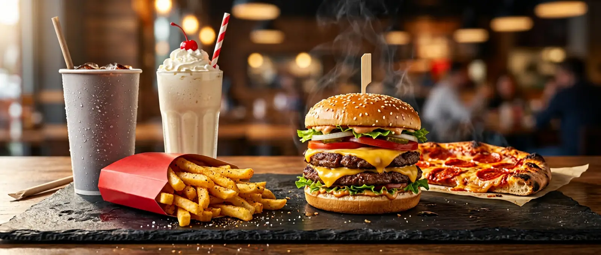

The Burger
Wichita → San Bernardino
Two buns, one patty, infinite branding. The 1948 Speedee System rebuilt the kitchen around it and made the burger a manufacturing problem.
A field guide to the world's most popular meal
Fast food isn't a cuisine — it's a delivery mechanism that invented its own menu. Assembled in seconds from a handful of standardized parts, sold at a price that closes the deal faster than the kitchen can. Here's what that machine actually looks like: the menu, the money, the history, and the countries that do it their own way.

The definition
Strip away the branding and every fast food meal is built from the same three promises.
Not an accident of the model — the actual thing being sold. The assembly line came first; the food was designed backwards from it. Limit the parts, pre-cut everything, cook on a timer.
Small enough to memorize, identical in every location. Consistency is the product; the recipe is the specification. A burger in Tokyo and a burger in Tulsa are the same burger on purpose.
Almost every major chain grew by franchising: someone else's capital, the brand's playbook, a percentage off the top. That's what turns a diner into five thousand addresses.
The numbers
Analysts disagree about the size of the global fast food market — estimates for 2026 run from roughly $700B to $980B — because "fast food" is a fuzzy boundary. But they agree on the shape: mid-single-digit growth, led by North America, with Asia-Pacific moving fastest.
McDonald's restaurants by market, company-reported, year-end 2024 — 43,477 restaurants worldwide, about 95% of them franchised.
The same company now reports more than 45,000 restaurants across 100+ countries. Yum! Brands — KFC, Taco Bell, Pizza Hut — reported more than 63,000 across 155 countries and territories in July 2026.
The timeline
Roughly a century, in ten steps. The through-line isn't food — it's removing friction.
The world tour
The format travels; the filling stays local. Everywhere it lands, fast food gets rebuilt out of whatever is already being eaten nearby.
Fries, cheese curds, gravy. A diner invention from rural Quebec that became the country's most exported dish.
Fried fish wrapped in paper, sold from a counter for 160 years — the original takeaway before anyone franchised it.
Vertical spit, seasoned pork, pineapple — a technique that arrived with Lebanese migration and a chilli marinade.
A baguette from one empire, pâté and pickles from another, assembled into what Anthony Bourdain called the world's best sandwich.
Invented in Berlin in the 1970s as a portable version of a sit-down meal. Now the country's most-eaten street food.
Turkish street food had the wrap-and-sell format centuries before it had competition.
Convenience-store hot counters and bento racks perfected the same promise — fast, consistent, cheap, everywhere.
Curry served in a hollowed-out half loaf. Takeaway packaging made of the meal itself.
A fried potato dumpling in a bun with chutney — Mumbai's answer to the burger, at a price that undercuts everything.
Loose change
Tap any line to open it.
Since 1986, The Economist has compared the price of a Big Mac across countries as a lighthearted test of purchasing-power parity. It started as a joke and is still cited in currency debates — which says something about how standardized the burger really is.
About 95% of McDonald's restaurants are franchised: the operator puts up the capital, the company supplies the system. That only works if the product can be specified precisely enough to reproduce — so the recipe was standardized first, then the business scaled on top of it.
It spread because of people who couldn't easily come inside: soldiers in uniform, later drivers with kids asleep in the back seat. Convenience for some customers is not a lifestyle choice — it's the only way the meal works at all.
Fried potatoes show up in Belgian and French cooking in the 17th century, long before anyone thought to sell them in a paper sleeve. The sleeve, the salt timing, and the ten-minute quality window are the only modern parts.
Discount lineups reappear whenever customers trade down: during the 2008 financial crisis, and again as inflation squeezed household budgets in the 2020s. The cheap item isn't a loss leader so much as a weather report.
Sources
Market-size estimates vary by methodology, so the numbers above are framed as ranges and labelled with their source. Figures checked on 5 October 2026.
About this page. Plain HTML and CSS: hand-written markup, no JavaScript, no framework, no build step, no trackers. Navigation is ordinary links; the dark-mode switch is a checkbox and a :has() selector; the accordions are native <details>. One page, one image. That's the whole trick — hypermedia, end to end.
Served from GitHub Pages. Source and issue tracker in the repository.